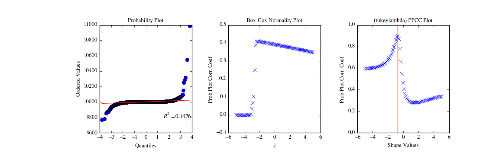

scipy.stats.ppcc_plot¶
- scipy.stats.ppcc_plot(x, a, b, dist='tukeylambda', plot=None, N=80)[source]¶
Calculate and optionally plot probability plot correlation coefficient.
The probability plot correlation coefficient (PPCC) plot can be used to determine the optimal shape parameter for a one-parameter family of distributions. It cannot be used for distributions without shape parameters (like the normal distribution) or with multiple shape parameters.
By default a Tukey-Lambda distribution (stats.tukeylambda) is used. A Tukey-Lambda PPCC plot interpolates from long-tailed to short-tailed distributions via an approximately normal one, and is therefore particularly useful in practice.
Parameters: x : array_like
Input array.
a, b: scalar
Lower and upper bounds of the shape parameter to use.
dist : str or stats.distributions instance, optional
Distribution or distribution function name. Objects that look enough like a stats.distributions instance (i.e. they have a ppf method) are also accepted. The default is 'tukeylambda'.
plot : object, optional
If given, plots PPCC against the shape parameter. plot is an object that has to have methods “plot” and “text”. The matplotlib.pyplot module or a Matplotlib Axes object can be used, or a custom object with the same methods. Default is None, which means that no plot is created.
N : int, optional
Number of points on the horizontal axis (equally distributed from a to b).
Returns: svals : ndarray
The shape values for which ppcc was calculated.
ppcc : ndarray
The calculated probability plot correlation coefficient values.
See also
References
J.J. Filliben, “The Probability Plot Correlation Coefficient Test for Normality”, Technometrics, Vol. 17, pp. 111-117, 1975.
Examples
First we generate some random data from a Tukey-Lambda distribution, with shape parameter -0.7:
>>> from scipy import stats >>> import matplotlib.pyplot as plt >>> np.random.seed(1234567) >>> x = stats.tukeylambda.rvs(-0.7, loc=2, scale=0.5, size=10000) + 1e4
Now we explore this data with a PPCC plot as well as the related probability plot and Box-Cox normplot. A red line is drawn where we expect the PPCC value to be maximal (at the shape parameter -0.7 used above):
>>> fig = plt.figure(figsize=(12, 4)) >>> ax1 = fig.add_subplot(131) >>> ax2 = fig.add_subplot(132) >>> ax3 = fig.add_subplot(133) >>> stats.probplot(x, plot=ax1) >>> stats.boxcox_normplot(x, -5, 5, plot=ax2) >>> stats.ppcc_plot(x, -5, 5, plot=ax3) >>> ax3.vlines(-0.7, 0, 1, colors='r', label='Expected shape value') >>> plt.show()
